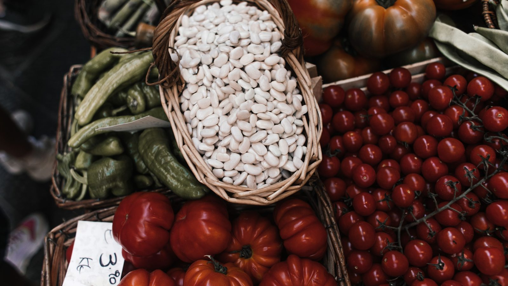

Brasil · Economia
Brasil · EconomiaInflação cai pelo quarto mês seguido, o tomate desaba 29% e a energia elétrica puxa para o outro lado
O mês anterior da mesma conta, quando a luz ainda subia.
O IPCA-15 de agosto veio negativo, puxado pelo Bônus de Itaipu na conta de luz e pela comida mais barata. O tomate caiu 27,38% e a passagem aérea, 13,30%.
Em 30 segundos · Modo de Leitura, formato original Santa Informa
A prévia da inflação de agosto ficou em -0,40%.
É a menor desde agosto de 2022, quando marcou -0,73%.
O dado é do IPCA-15, divulgado pelo IBGE nesta quarta-feira.
Em julho o índice tinha ficado em 0,06%.
Em 12 meses, o acumulado é de 4,24%.
A energia elétrica residencial caiu 6,25%, por causa do Bônus de Itaipu.
A comida em casa ficou 0,97% mais barata, com o tomate a -27,38%.
A passagem aérea recuou 13,30% e os combustíveis, 1,43%.
O IPCA cheio de agosto sai em 11 de setembro.
EconomiaPublicada em Redação Santa Informa

A prévia da inflação de agosto ficou em -0,40%, a menor desde agosto de 2022, quando marcou -0,73%. O dado é do IPCA-15, divulgado nesta quarta-feira, 26, pelo IBGE, e chegou pela Agência Brasil. Em julho o indicador tinha marcado 0,06%. No acumulado de 12 meses, o índice está em 4,24%.
O subitem que mais derrubou a prévia foi a energia elétrica residencial, que recuou 6,25%. A explicação é o Bônus de Itaipu, desconto que apareceu na conta de luz. Sozinho, esse item tirou 0,26 ponto percentual do índice. Em seguida vem habitação, que caiu 1,41%, e transportes, com queda de 1%.
O grupo alimentação e bebidas recuou 0,57%, puxado pela comida em casa, que ficou 0,97% mais barata. As maiores quedas foram do tomate, com -27,38%, da batata-inglesa, com -25,14%, e da cenoura, com -17,05%. O café moído caiu 2,31%. No transporte, a passagem aérea despencou 13,30% e os combustíveis recuaram 1,43%, com etanol a -3,63%, gasolina a -1,23% e óleo diesel a -0,71%.
Dos nove grupos apurados, quatro tiveram alta. Despesas pessoais subiram 0,66%, educação 0,46%, saúde e cuidados pessoais 0,40% e artigos de residência 0,04%.
Quem vende no litoral está agora montando a tabela de preço da temporada. Comida mais barata e conta de luz menor mexem direto com restaurante, pousada e mercado de bairro, que trabalham com margem apertada em Itapema e na Costa Esmeralda. Para quem compra, o efeito chega na feira e no fim do mês. Só que o bônus na conta de luz é desconto pontual, não é preço novo. Quando ele sair, a conta volta ao patamar de antes, e essa parte da queda some. O IPCA cheio de agosto sai em 11 de setembro.
O resumo de 30 segundos está no topo e a versão completa é o texto acima. Aqui ficam as três leituras da casa sobre o mesmo assunto.
Clara, a otimista
Prévia negativa em agosto é notícia boa para quem faz compra de mês. A comida em casa ficou 0,97% mais barata e a conta de luz caiu mais de 6%, e isso aparece no orçamento de quem ganha pouco, que é justamente onde comida e energia pesam mais.
Em 12 meses o índice está em 4,24%, dentro do teto de 4,5% que o governo persegue. Faz tempo que a conta não fechava assim.
Seu Prudêncio, o criterioso
Merece atenção a origem da queda. Boa parte dela veio do Bônus de Itaipu, que é desconto temporário na conta de luz, e não uma redução de tarifa. Quando o bônus terminar, aquele -6,25% da energia sai da conta e o índice volta a subir sem que nada tenha piorado de verdade.
Uma sugestão útil para quem administra restaurante, mercado ou pousada aqui: não reprecifique cardápio e diária olhando só este número. Legume é o item mais volátil da cesta, e tomate que cai 27% num mês costuma devolver parte disso no seguinte. Vale acompanhar o IPCA cheio de 11 de setembro antes de fechar a tabela do verão.
Feita a ressalva, o quadro é favorável. Índice em 4,24% no acumulado de 12 meses, dentro do intervalo da meta, com combustível e alimento em queda ao mesmo tempo, é uma combinação que dá fôlego para quem vive de margem apertada. Chega na hora certa para o comércio do litoral, que passa agosto planejando a temporada.
Caco, o sarcástico
O tomate caiu 27,38%. Depois de anos servindo de exemplo de carestia, o coitado agora vira exemplo de deflação. Vida dura a do tomate.
A passagem aérea recuou 13,30%. Ótimo, só falta agora aparecer o dinheiro para comprar a passagem.
E a conta de luz caiu por causa de um bônus. Ou seja, o preço não baixou, ganhamos um desconto. É como emagrecer tirando o sapato antes de subir na balança.
Fontes: Agência Brasil, reportagem de Bruno de Freitas Moura publicada em 26 de agosto de 2026 às 10h01, com edição de Valéria Aguiar e dados do IBGE, trazendo o IPCA-15 de agosto em -0,40%, a menor desde agosto de 2022 quando marcou -0,73%, o resultado de 0,06% em julho, o acumulado de 4,24% em 12 meses, a deflação em cinco dos nove grupos, a queda de 6,25% na energia elétrica residencial por causa do Bônus de Itaipu, a alimentação e bebidas em -0,57% com a alimentação no domicílio 0,97% mais barata, as quedas de 27,38% no tomate, 25,14% na batata-inglesa, 17,05% na cenoura e 2,31% no café moído, a passagem aérea em -13,30%, os combustíveis em -1,43% com etanol a -3,63%, gasolina a -1,23% e óleo diesel a -0,71%, as altas em despesas pessoais, educação, saúde e artigos de residência, a meta de inflação de 3% com margem de 1,5 ponto percentual e a divulgação do IPCA cheio de agosto em 11 de setembro.
Brasil · EconomiaO mês anterior da mesma conta, quando a luz ainda subia.
 Brasil · Economia
Brasil · EconomiaO outro lado da conta: quanto entra, e não só quanto sai.
 Litoral · Economia
Litoral · EconomiaPreço mais calmo agora é o que o comerciante daqui precisa para fechar a tabela do verão.